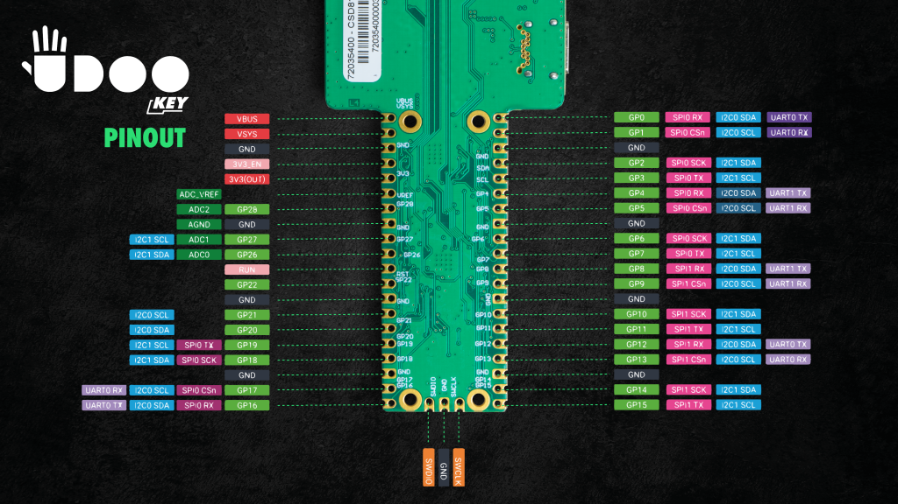

Full specs
Full Specifications
Below the full technical specifications
| ESP32 | RP2040 | |
|---|---|---|
| Memory | 8 MB PSRAM | 264 KB PSRAM |
| Flash storage | 16 MB internal SPI flash | 64M-bit external QSPI flash |
| Connectivity | Wi-Fi 802.11 b/g/n (802.11n up to 150 Mbps), Bluetooth v4.2 BR/EDR and BLE specification | - |
| RF power | WiFi: 20 dBm, BT:13.7 dBM | - |
| Modulation type | GFSK, OFDM | - |
| Frequency bands | 2400 ÷ 2483.5 MHz | - |
| Bandwidth | BT / BLE: 1 MHz (79 channels) / 2 MHz (40 channels) | - |
| Peripherals | UART, I²C, SPI on UEXT connector, blue and yellow LEDS, SWD lines to RP2040 | UART, SPI, I²C on P1 and P2 , green LED |
| Sensors | SPK0838HT4H-1 Microphone, shared MPU-6500 IMU | Shared MPU-6500 IMU |
Operating temperature: 0°C ÷ +60°C
Power supply: +5VDC
Dimensions: 130 x 40 x 10.9 mm
Resources
In addition to this guide, several ones are available online:
- for a full explanation of the UDOO KEY hardware download the UDOO KEY User Manual
- see the Get Started - ESP32 and IDF, Get Started - ESP32 and Arduino, Get Started - RP2040 and MicroPython and Get Started - RP2040 and Arduino sections for all the useful information for a quick installation
- here you can find the schematics file for the UDOO KEY
- official ESP32 development framework
- Raspberry PI PICO datasheet
- Raspberry PI PICO C/C++ SDK
- MicroPython download page for RP2040
Board versions
The UDOO KEY is available in two versions: UDOO KEY Basic and UDOO KEY Pro.
The UDOO KEY Basic mounts no sensors, it is therefore perfect for those who want full control of their project, as it allows expansion with modules of developer’s choice.
The UDOO KEY Pro mounts two powerful sensors: a 6-axis IMU and a digital microphone.
- The 6-axis IMU motion sensor, an
MPU-6500, combines an accelerometer and a gyroscope in a single module to streamline a wide array of projects, from robotics and RC cars up to smart bikes and automation. It is connected to the ESP32 via I2C bus. You can decide whether to access the I2C bus via ESP32 or RP2040 through the jumper switch. - The omnidirectional digital microphone, a
SPK0838HT4H, is designed for AI-powered sound & voice recognition as well as audio control. It is connected to the ESP32 via I2S bus.
The following table and picture summarize the differences between the UDOO KEY Basic and the UDOO KEY Pro.
| UDOO KEY Basic | UDOO KEY Pro | |
|---|---|---|
| Sensors | on chip temperature sensor (RP2040) | on chip temperature sensor (RP2040) 6-axis IMU motion sensors omnidirectional digital microphone |
Notice that, only for kickstarters, the IMU sensor has been changed and is currently installed the model MPU-6500, a 6-axis motion tracking sensor.
Board headers
The UDOO KEY features four useful pinout header.
The pin header connector P3 on the top of the board is compliant with the UEXT specification and is accessible from the ESP32. It exposes the I2C, UART, and SPI interfaces.

The two headers on the bottom of the board, P1 and P2, are 100% compatible with Raspberry Pi Pico, both hardware and software-wise – except for two GPIO pins used for UART mapping, namely GP0 and GP1, to ensure the communication between the ESP32 and the RP2040. This means that each and any expansion hardware as well as software built for Raspberry Pi Pico will work out of the box on the UDOO KEY.
Finally, on P5 header are connected SWD lines (SWDCLK, GND and SWDIO) to easly program the RP2040, as for the Raspberry Pi Pico.

Power source
The UDOO KEY can be powered by an external power supply of +5V DC (max 2.5A) via USB Type-C connector (C1).
The board is also provided with a 2.5A 32V DC fuse to protect itself from overcurrent injection.
The USB Type-C connector powers up both the ESP32-WROVER-E module and the RP2040, and all peripherals connected on.
The UDOO KEY can go into deep sleep, reducing the power consumption to a minimum. In this state it only awakes if triggered by a specific event, thus extending battery life up to several years.